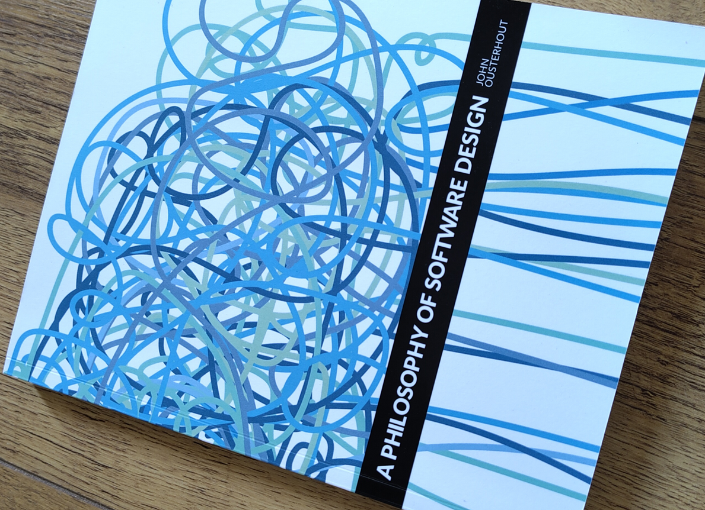

Tactical versus strategic coding
Vacation time for me generally means reading time and for this occasion I brought "A philosophy of software design" by John Ousterhout with me. So over the course of a few warm summer evenings I read my way through it and here are some thoughts and an interesting thing I picked up.
Many things that the book covered were more or less in the tool belt, a refresher is always nice and I agree with most of the things the book describes.

Something that really made something click was the distinction between Tactical and Strategic coding. It's one of the first topics the book dives into, and it put proper words on something I've been explaining to teams I work with in far more words.
Tactical coding
The way of working that the book describes as "Tactical" is one where you go straight for the solution to the task at hand. In this mode you skip most of the design work to build a clean, extensible solution to get out new work as fast as possible. The time saving comes with the risk of building something that might not be so easy to modify later when the system needs to change.
This fits my description of "quick and dirty" to get stuff shipped in a hurry. While this sort of work has its place, the technical debt this leaves behind will have to be dealt with at some point.
Strategic coding
In contrast to "Tactical", the book describes a "Strategic" way of working where instead of diving straight in, you take some additional time to do some investigation into various solutions and do some design work to ensure the final solution is best fit for purpose and is far less likely to come back to haunt you later when additional changes or extensions need to be made to the code.
I'm all for taking a little time to properly implement a solution and this is also one of the things I work on when engaging with developer teams.
Properly architecting a solution is a great upfront investment which will pay itself back down the line when the inevitable changes start coming in.
I also really like the wording to set the two ways of working apart and these will definitely go into the toolbox for future engagements to help give words to the "quick and dirty" style versus a more deliberate development cycle.
Some thoughts on test-driven-development
The book did surprise me in a later chapter about test driven development and how it enables and encourages tactical working. One of the practices I present is test driven development and how it can be a great tool in designing modular solutions in code.
The style of TDD I present to teams is writing a single test that describes some desired behavior and then write just enough code to satisfy the test.
I guess you could see that as getting to a solution as quickly as possible, but a crucial step I include in the workflow is a refactor step after the code starts passing the test. This practice is known as Red-Green-Refactor and greatly helps with code modularity while also creating well-defined interfaces separate from implementation (also a topic the book covers in great detail!)
Writing a test, then implementing the behavior and finally taking a moment to clean, optimize and improve the code from various angles (performance, readability, etc) seems like a great way to write code to me.
Conclusion
Overall I found the book insightful and while I don't agree with everything it's always good have some different views of topics you're already familiar with.